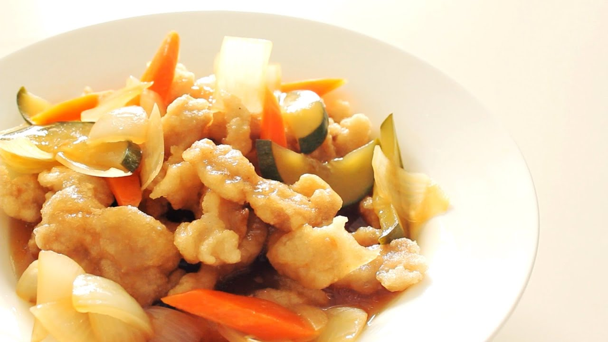

China Food Menu
탕수육

재료 : 탕수육용 고기(등심) 300g, 전분가루(반죽/물전분), 소금 1/3T, 후추 1/4T, 다진마늘 1/2T, 계란 흰자 1개
① 전분가루에 물을 섞은 뒤 20분 정도 재워두고 고기에 소금,후추,다진마늘로 밑간을 하고 섞어줍니다.
②처음에 재워뒀던 녹말물의 위에 뜬 물을 따라 버려줍니다.
③계란 흰자와 된녹말로 고기반죽을 해주고 된녹말을 넣어가며 농도를 맞춰줍니다.
④중약불에서 고기를 1차로 한번 튀겨줍니다.
⑤1차로 튀긴 고기를 건져낸 뒤,
2차로 중불에서 한번 더 바삭하게 튀겨줍니다.
⑥노릇노릇해지면 모두 건져내 완성한다.
Mascot

Social Network Service